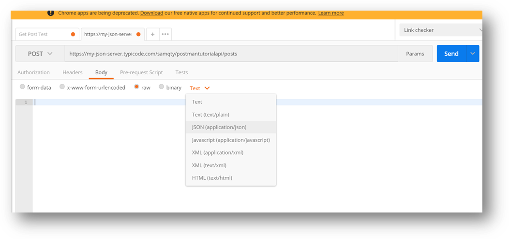
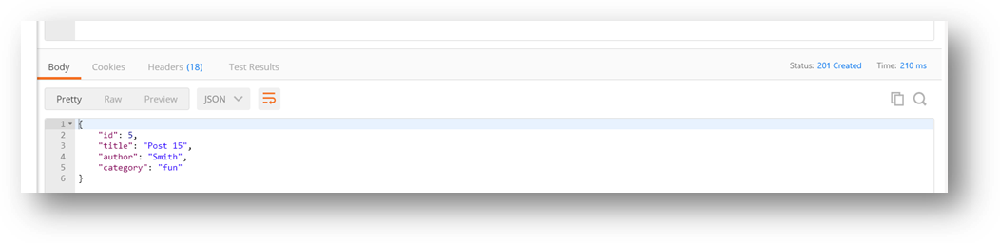

Another common http request that is used to create stuff on the server is “Http Post”, Postman allows you to issue a post request with different content types, in this tutorial we are going to stick to json though.
- To continue from where we left off, click on the “+” at the top of the window to create a new tab on the post man window, Postman does allow you to work with multiple requests at the same time, similar to how latest browsers behave.
- Change the http method from the default GET to POST on the address bar and enter the address https://my-json-server.typicode.com/samqty/postmantutorialapi/posts
- Click on the “Body” tab below the address. Postman allows you to specify the body in different format, to simulate an actual submission
- Form-data
- X-ww-form-urlencoded
- Raw
- Binary
- Click on “raw”, this option allows you to enter a json payload directly 
- After selecting “raw” click on the down arrow on the link named “Text” and pick JSON(application/json) and type in this text:
{
"id": 5,
"title": "Post 15",
"author": "Smith",
"category": "fun"
}
- Click on send to submit this json data
- If everything worked you should get a response that looks like this

- Note: The Http Status code “201 Created”. Go ahead and save this request to the “Manual Test” collection by clicking on the “Save” button.